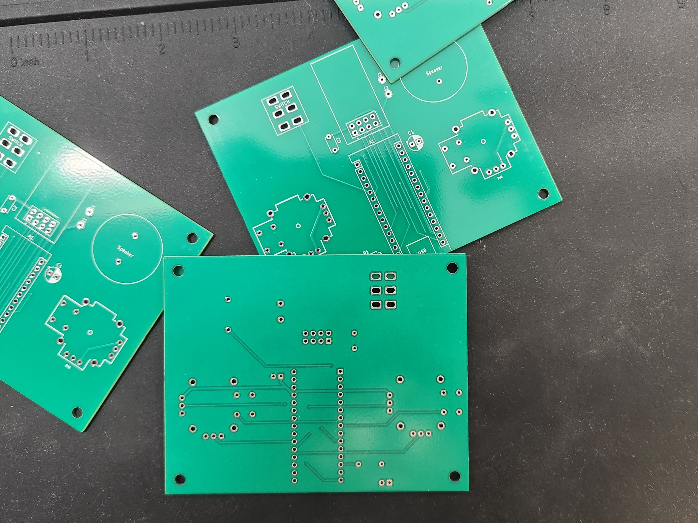

This week is the final week before submitting my project, so I must ensure everything is complete. This
includes 3D printing the case for my controller, soldering the components onto the PCB scheduled to
arrive this Friday, and writing code to ensure that the PCB and components work together. Since my PCB
has been in transit since last week after I sent it off for fabrication, I focused on 3D printing the
casing at the beginning of the week. Once the PCB arrives, I will solder the components together.
First thing i did this week was load up onshape which is a cloud-based CAD platform that allows users to
create a collaborate 3D models in real time from anydevice, making it an ideal for me since i work on my
home computer and my laptop, i have worked with CAD in the past when I got my 3D printer so i did not
have to lurn how to onshape so i could go straight into it. I first chose Onshape as the CAD because it
was cloud-based. Still, also its free i could have used Fusion 360, which is one of the best CAD’s out
there but its not free and comes at quite a price although since i am a student i would able to use it
for free but after i graduate i will have to pay so i decided to use a cad that i can use for free
forever.


Python
const int potPin = A0; // Pin connected to the potentiometer's
void setup() {
Serial.begin(9600); // Initialize serial communication at 9600 baud rate
}
void loop() {
int potValue = analogRead(potPin); // Read the potentiometer's value (0 to 1023)
Serial.println(potValue); // Print the value to the Serial Monitor
delay(100); // Short delay for stability
}
Python
const int buzzerPin = 3; // Pin connected to the buzzer
// Define the melody notes (in Hz)
int melody[] = {2637, 3136, 3951}; // C4, D4, E4
// Define the note durations (in milliseconds)
int noteDurations[] = {150, 150, 150};
void setup() {
pinMode(buzzerPin, OUTPUT);
}
void loop() {
for (int i = 0; i < 3; i++) {
tone(buzzerPin, melody[i]);
delay(noteDurations[i]);
noTone(buzzerPin);
delay(20); // Short pause between notes
}
delay(1000); // Wait before repeating the melody
}

